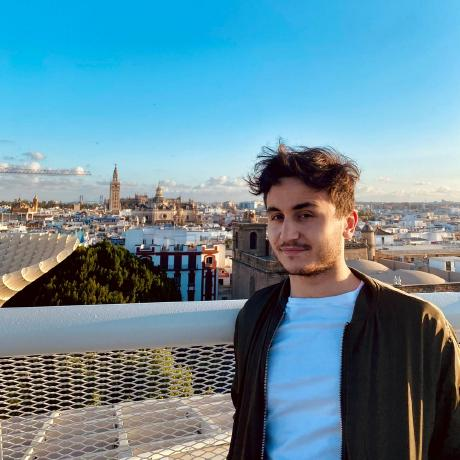

Hi, I'm Jacob
I chase the strangest part of your chromosomes — the centromere. It's absolutely essential for life, yet it evolves faster than almost anything else in the genome. Untangling that paradox is my PhD at the University of Cambridge.
"Evolution is, to me, the most fascinating thing in life."

The paradox I study
The most important part of your DNA
evolves the fastest. Why?
Every time a cell divides, the centromere is the anchor that pulls chromosomes apart. Get it wrong and you get cancer, infertility, or a dead cell. So you'd expect it to be frozen by evolution — untouchable. Instead, its DNA is a churning sea of repeats that turns over rapidly between species. That contradiction is the centromere paradox, and it's what I get up for.
I attack it from both sides: as a bioinformatician (long-read genomes, phylogenomics, comparative genomics, 3C, protein language models) and in the wet lab (IP-MS, Pore-C, Nanopore sequencing on the PromethION). I like building the tool that makes previously invisible biology finally measurable.
Essential, yet unstable
How does a region survive under intense functional constraint while its sequence rewrites itself every few million years?
Wet lab meets code
I move between the bench and the cluster — Nanopore runs by day, Nextflow pipelines and SLURM jobs by night.
Henderson lab, Cambridge
Genetic & Epigenetic Inheritance in Plants — with 500,000 CPU-hours of Spanish supercomputing behind the "pancentromere" project.
Things I've built & figured out
Poke around my projects
Each one comes with a tiny interactive animation of the actual idea behind it. Click through — no genomics degree required.
How a kid from Seville ended up here
The scenic route
First in my family to go to university. Five countries, a lot of scholarships, and one very stubborn obsession with evolution. Hover the stops.
In the media
Science, out loud
As a first-generation student, telling this story publicly matters to me. A selection of interviews and features — including a run of pieces that reached about a million people.
Beyond the bench
The other things I care about
Red Pioneros
Founder & president of an NGO helping first-generation, working-class high-schoolers reach university — the ladder I wish I'd had. redpioneros.org →
Tea Phytologist
Co-founder & editor of Cambridge Plant Sciences' student-run satirical spoof journal — reviving a tradition first cooked up in 1908.
Nucleate Spain
Co-Managing Director of the Spanish chapter of the largest global community of bio-innovators, mentoring teams from lab to market.
A few good days
Nova 111 top-10 Spanish bioscientist · Extraordinary End-of-Degree Award · 3rd in the Portuguese Bioinformatics League with team MrPlanta.
Say hello
Let's talk science (or tea)
Always up for collaborations in genome evolution, centromeres, phylogenomics, long-read methods — or science outreach and first-gen mentoring.